NALgen Analysis Pt.1 - Recap
The output of multivariate analyses in the NALgen Analysis Pt.1 post was dense (935 lines of code, 121 figures). In this recap, I wanted to highlight some of the results. Furthermore, I wanted to mention that the population structure inference methods I compared were all machine learning (classification) algorithms.
DAPC, an unsupervised-supervised learning algorithm (principal components analysis being unsupervised, and the supervised discriminant analysis step),
- Non-negative matrix factorization algorithms implemented in the LEA and tess3r packages (both cases of unsupervised machine learning), which use least-squares estimates of ancestry coefficients, which are geographically constrained in tess3r (i.e., spatial/geographic weights are used).
- Non-negative matrix factorization algorithms implemented in the LEA and tess3r packages (both cases of unsupervised machine learning), which use least-squares estimates of ancestry coefficients, which are geographically constrained in tess3r (i.e., spatial/geographic weights are used).
All three methods are rather fast and produced similar results.
DAPC went through 24 data sets in 17 mins,
LEA processed 8 in 38 mins (however, it should be noted that this included 5 replicates x 15 values of K = 75),
tess3r processed 8 in 122 mins (also 5 replicates x 15 values of K).
The NALgen method leverages the flexibility of the co-inertia method (N.B. other multivariated ordination techniques can be used) to incorporate genetic clustering information from any algorithm (see the co-inertia section below). The idea behind this is to account for population structure while maximizing covariance between genetic and environmental data.
Color palette
library(ggsci)
library(scales)
futr <- pal_futurama()
schwifty <- pal_rickandmorty()
futr.cols <- colorRampPalette(futr(12)[c(12,11,3,7,8,6,1,2)])
schwifty.cols <- colorRampPalette(schwifty(12)[c(3,12,4,6,1,9,8,2)])
futrschwift.cols <- colorRampPalette(c("gray15", schwifty(12)[3], futr(12)[11], schwifty(12)[c(1,9)], futr(12)[c(8,6,2)]))
cols <- futrschwift.cols(12)
#show_col(futr.cols(20))
#show_col(schwifty.cols(20))
#show_col(futrschwift.cols(20))
Multivariate analyses: Using machine learning alogorithms to infer population structure
Loading the environmental data
library(raster)
library(virtualspecies)
setwd("C:/Users/chazh/Documents/Research Projects/Reticulitermes/Phylogeography/Geo_Analysis/Data/EnvData/bioclim_FA/east coast/Finalized/current")
fn <- list.files(pattern=".asc")
fa_stk <- stack()
for(i in 1:length(fn)) fa_stk=addLayer(fa_stk,raster(fn[i]))
#names for plot titles
fa_stk_names <- c("Annual Temperature Range", "Dry-Season Precipitation", "Summer Temperature", "Wet-Season Precipitation")
##plot Environmental Factors (https://datadryad.org/resource/doi:10.5061/dryad.5hr7f31)
#for (i in 1:4){
# plot(fa_stk[[i]], main=fa_stk_names[i],
# breaks=seq(round(min(as.matrix(fa_stk[[i]]),na.rm=T),1),
# round(max(as.matrix(fa_stk[[i]]),na.rm=T),1),length.out=11),
# col=cols)
#}
Loading the genetic data (only 2, vs. 24 in the NALgen Analysis Pt.1 post)
library(adegenet)
m0.5_n.s <- "C:/Users/chazh/Documents/Research Projects/Reticulitermes/Simulations/popRange/m_0_5/Simulated_Genotypes/20pop_subsets/neutral+selected/"
setwd("C:/Users/chazh/Documents/Research Projects/Reticulitermes/NALgen_Analysis/Multivariate/")
#below I define the xyFromRC function: includes a scenario when genind and rastr don't have the same dimensions
#currently (for my purposes here it's fine) only spits out error when aspect ratio is not the same, but proceeds the same anyway
#need to fix to apply to other situations
xyFromRC <- function(genind, rastr){
coord <- genind$other
row.no <- coord[,1]+1
col.no <- coord[,2]+1
dim.genind.row <- 26 #dim of simulated landscape
dim.genind.col <- 34 #dim of simulated landscape
dim.rast.row <- dim(rastr)[1]
dim.rast.col <- dim(rastr)[2]
if(dim.rast.col/dim.genind.col == dim.rast.row/dim.genind.row){
print("raster and genind are the same aspect ratio. proceed.")
}
else{
print("error! raster and genind are NOT the same aspect ratio. proceed ANYWAY.")
}
rastr <- aggregate(rastr, dim.rast.col/dim.genind.col)
cell.no <- cellFromRowCol(rastr, row=row.no, col=col.no)
coord <- xyFromCell(rastr, cell.no)
as.data.frame(coord)
}
#use already aggregated fa_stk to make this go faster
fa_stk.agg <- aggregate(fa_stk, dim(fa_stk)[1]/26)
###m0.5###
##neutral AND selected##
m0.5_hchp_n.s <- read.genepop(paste0(m0.5_n.s,"hchp_20pops.gen"))
m0.5_hchp_n.s$other <- read.table(paste0(m0.5_n.s,"hchp_20pops_coords.txt"), sep=" ",header=F)
colnames(m0.5_hchp_n.s$other)=c("x","y")
m0.5_hchp_n.s$other <- xyFromRC(m0.5_hchp_n.s, fa_stk.agg)
m0.5_hclp_n.s <- read.genepop(paste0(m0.5_n.s,"hclp_20pops.gen"))
m0.5_hclp_n.s$other <- read.table(paste0(m0.5_n.s,"hclp_20pops_coords.txt"), sep=" ",header=F)
colnames(m0.5_hclp_n.s$other)=c("x","y")
m0.5_hclp_n.s$other <- xyFromRC(m0.5_hclp_n.s, fa_stk.agg)
Inferring population structure with DAPC
temp.dapc.obj <- dapc(m0.5_hclp_n.s, center=T, scale=F, n.pca=100, n.da=2)
temp <- optim.a.score(temp.dapc.obj, n=15, n.sim=30)
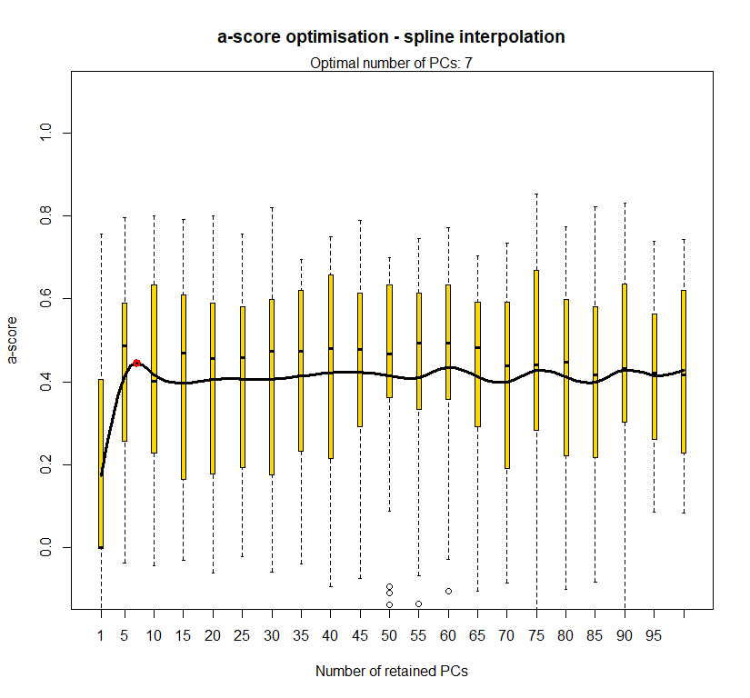
best.n.pca <- temp$best
dapc.obj <- dapc(m0.5_hclp_n.s, center=T, scale=F, n.pca=best.n.pca, n.da=2)
#plot parameters
par(mfrow=c(1,1), fg="gray50", pty='m', bty='o', mar=c(4,4,4,4), cex.main=1.3, cex.axis=1.1, cex.lab=1.2)
scatter(dapc.obj, col=futrschwift.cols(20), ratio.pca=0.3, bg="white", main="m = 0.5, high complexity, low permeability, neutral and selected loci",
pch=c(16,15,18,17), cell=0, cstar=0, solid=0.9, cex=1.8, clab=0,
mstree=TRUE, lwd=3, scree.da=FALSE, leg=TRUE, txt.leg=popNames(m0.5_hclp_n.s))
par(xpd=TRUE)
points(dapc.obj$grp.coord[,1], dapc.obj$grp.coord[,2], pch=21:24, cex=2, lwd=3, col="black", bg=futrschwift.cols(20))
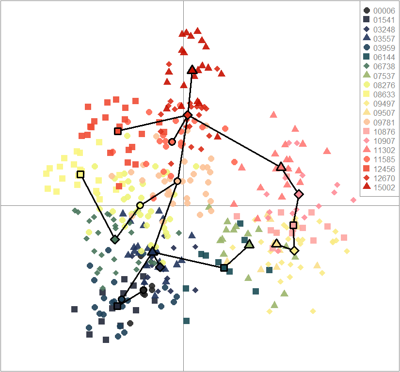
compoplot(dapc.obj, lab="", col=futrschwift.cols(20))
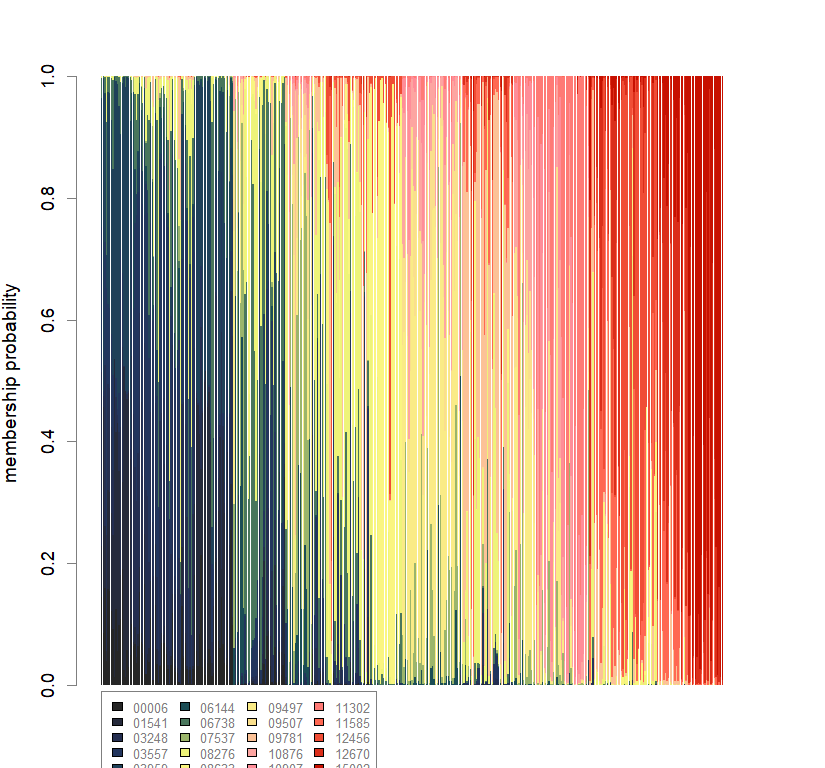
temp.dapc.obj <- dapc(m0.5_hchp_n.s, center=T, scale=F, n.pca=100, n.da=2)
temp <- optim.a.score(temp.dapc.obj, n=15, n.sim=30)
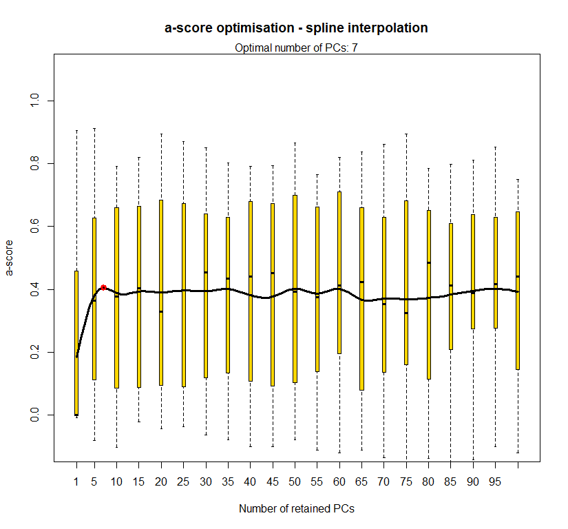
best.n.pca <- temp$best
dapc.obj <- dapc(m0.5_hchp_n.s, center=T, scale=F, n.pca=best.n.pca, n.da=2)
#plot parameters
par(mfrow=c(1,1), fg="gray50", pty='m', bty='o', mar=c(4,4,4,4), cex.main=1.3, cex.axis=1.1, cex.lab=1.2)
scatter(dapc.obj, col=futrschwift.cols(20), ratio.pca=0.3, bg="white", main="m = 0.5, high complexity, high permeability, neutral and selected loci",
pch=c(16,15,18,17), cell=0, cstar=0, solid=0.9, cex=1.8, clab=0,
mstree=TRUE, lwd=3, scree.da=FALSE, leg=TRUE, txt.leg=popNames(m0.5_hchp_n.s))
par(xpd=TRUE)
points(dapc.obj$grp.coord[,1], dapc.obj$grp.coord[,2], pch=21:24, cex=2, lwd=3, col="black", bg=futrschwift.cols(20))
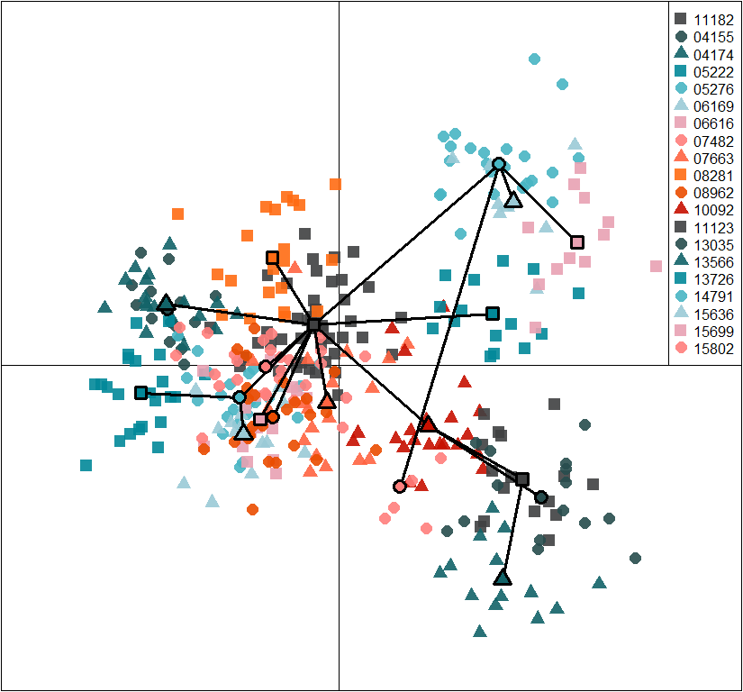
compoplot(dapc.obj, lab="", col=futrschwift.cols(20))
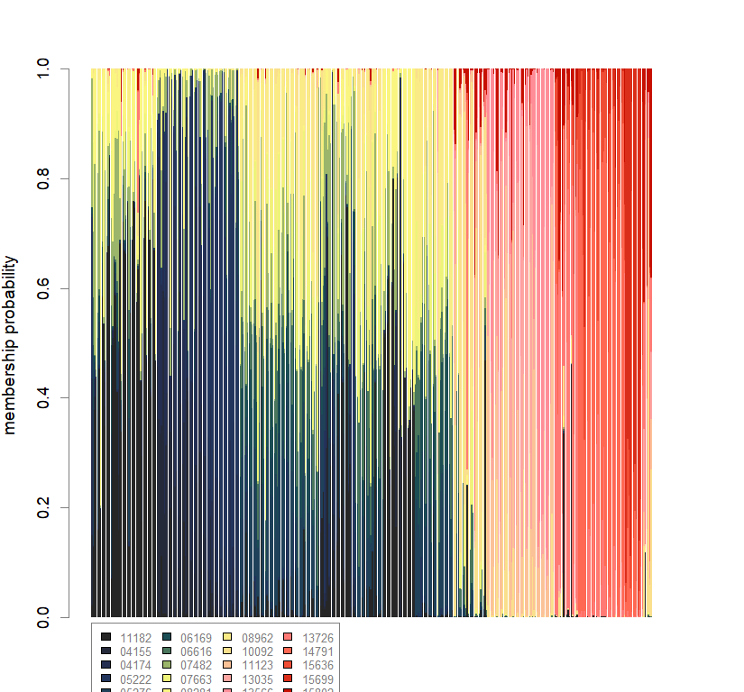
Inferring population structure with LEA package
library(LEA)
library(mapplots)
library(maps)
library(raster)
library(adegenet)
library(ggsci)
futr <- pal_futurama()
schwifty <- pal_rickandmorty()
futrschwift.cols <- colorRampPalette(c("gray15", schwifty(12)[3], futr(12)[11], schwifty(12)[c(1,9)], futr(12)[c(8,6,2)]))
#plot parameters
par(mfrow=c(1,1),fg="gray50",pty='m',bty='o',mar=c(4,4,4,4),cex.main=1.3,cex.axis=1.1,cex.lab=1.2)
geninds <- list(m0.5_hclp_n.s,
m0.5_hchp_n.s)
genind_names <- c("m0.5_hclp_n.s",
"m0.5_hchp_n.s")
ls_names <- c("HCLP landscape (m = 0.5)",
"HCHP landscape (m = 0.5)")
lea.dir <- c(
"C:/Users/chazh/Documents/Research Projects/Reticulitermes/Simulations/popRange/m_0_5/Simulated_Landscapes/500neutral+50selectedSNPs/High_Complexity_Landscapes/virtualspecies/Low_Permeability/",
"C:/Users/chazh/Documents/Research Projects/Reticulitermes/Simulations/popRange/m_0_5/Simulated_Landscapes/500neutral+50selectedSNPs/High_Complexity_Landscapes/virtualspecies/High_Permeability/"
)
for (i in 1:2){
genind.obj <- geninds[[i]]
genotypes <- genind.obj$tab
coords <- genind.obj$other
setwd(lea.dir[i])
write.table(t(as.matrix(genotypes)), sep="", row.names=F, col.names=F, paste0(genind_names[i], ".geno"))
geno <- read.geno(paste0(genind_names[i],".geno"))
setwd(paste0(lea.dir[i],"LEA"))
source("POPSutilities.r")
setwd(lea.dir[i])
reps <- 5
maxK <- 15
#running pop structure inference
snmf.obj <- snmf(paste0(genind_names[i],".geno"), K=1:maxK, repetitions=reps, project="new",
alpha=10, iterations=100000,
entropy=TRUE, percentage=0.25)
plot(snmf.obj, cex=1.2, col="lightblue", pch=19)
#determining best K and picking best replicate for best K
ce <- list()
for(k in 1:maxK) ce[[k]] <- cross.entropy(snmf.obj, K=k)
best <- which.min(unlist(ce))
best.K <- ceiling(best/reps)
best.run <- which.min(ce[[best.K]])
barchart(snmf.obj, K=best.K, run=best.run,
border=NA, space=0, col=futrschwift.cols(best.K),
xlab="Individuals", ylab="Ancestry proportions",
main=paste("Ancestry bar chart for", ls_names[i]))
qmatrix <- Q(snmf.obj, K=best.K, run=best.run)
grid <- createGrid(xmin(fa_stk), xmax(fa_stk),
ymin(fa_stk), ymax(fa_stk), 260, 340)
constraints <- NULL
shades <- 10
futrschwift.gradient <- colorRampPalette(futrschwift.cols(best.K))
grad.cols <- futrschwift.gradient(shades*best.K)
ColorGradients_bestK <- list()
for(j in 1:best.K){
k.start <- j*shades-shades+1
k.fin <- j*shades
ColorGradients_bestK[[j]] <- c("gray95", grad.cols[k.start:k.fin])
}
maps(qmatrix, coords, grid, constraints, method="max",
colorGradientsList=ColorGradients_bestK,
main=paste("Mapped ancestry coefficients for", ls_names[i]),
xlab="Longitude", ylab="Latitude", cex=.5)
map(add=T, interior=F)
}
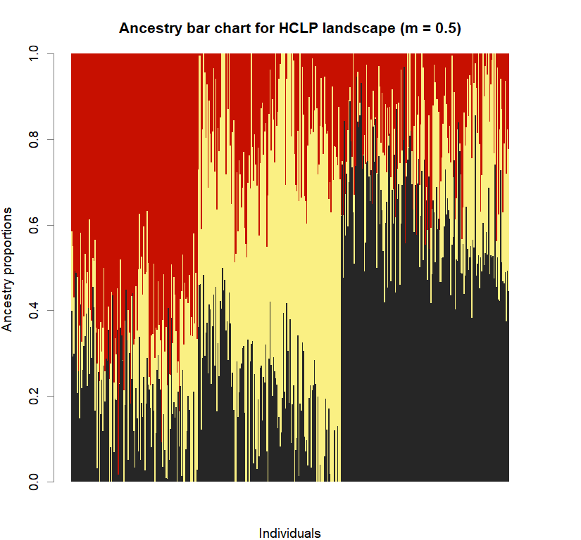 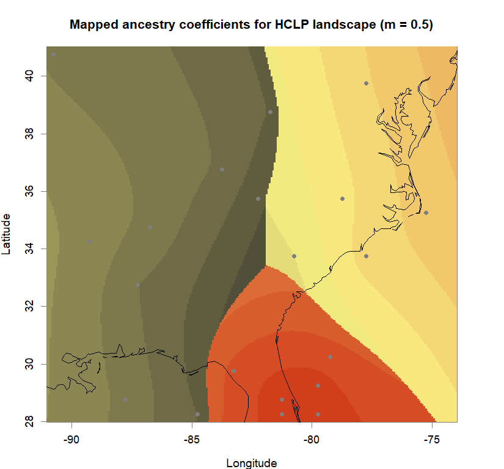 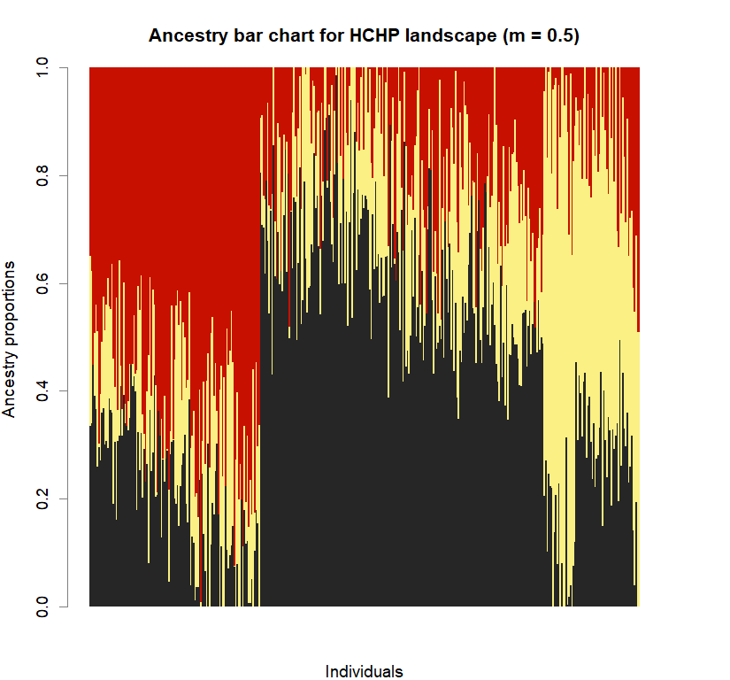 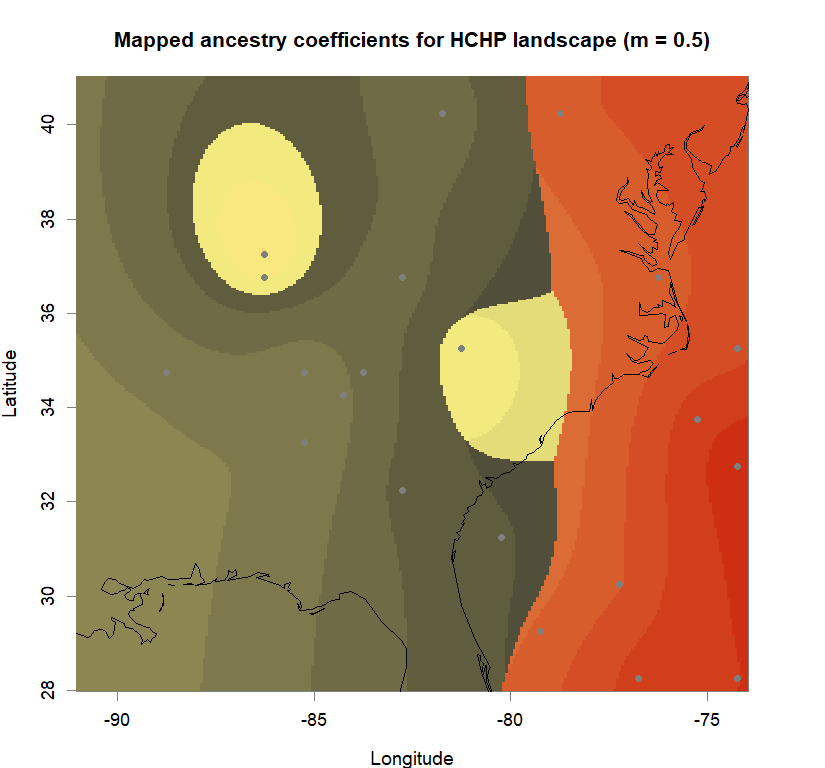
Inferring population structure with tess3r package
library(tess3r)
library(adegenet)
library(raster)
library(ggsci)
futr <- pal_futurama()
schwifty <- pal_rickandmorty()
futrschwift.cols <- colorRampPalette(c("gray15", schwifty(12)[3], futr(12)[11], schwifty(12)[c(1,9)], futr(12)[c(8,6,2)]))
#plot parameters
par(mfrow=c(1,1),fg="gray50",pty='m',bty='o',mar=c(4,4,4,4),cex.main=1.3,cex.axis=1.1,cex.lab=1.2)
geninds <- list(m0.5_hclp_n.s,
m0.5_hchp_n.s)
genind_names <- c("m0.5_hclp_n.s",
"m0.5_hchp_n.s")
ls_names <- c("HCLP landscape (m = 0.5)",
"HCHP landscape (m = 0.5)")
for (i in 1:2){
genind.obj <- geninds[[i]]
genotypes <- genind.obj$tab
coords <- as.matrix(genind.obj$other)
reps <- 5
maxK <- 15
#running pop structure inference
tess3.obj <- tess3(X=genotypes, coord=coords, K=1:maxK,
method="projected.ls", rep=reps,
max.iteration=1000, tolerance=1e-06,
#max.iteration = 10000, tolerance = 1e-07,
mask=0.25,
ploidy=2)
#determining best K and picking best replicate for best K
ce <- list()
for(k in 1:maxK) ce[[k]] <- tess3.obj[[k]]$crossvalid.crossentropy
best <- which.min(unlist(ce))
best.K <- ceiling(best/reps)
best.run <- which.min(ce[[best.K]])
q.matrix <- qmatrix(tess3.obj, K=best.K)
shades <- 10
futrschwift.pal <- CreatePalette(futrschwift.cols(best.K), shades)
barplot(q.matrix, border = NA, space = 0,
col.palette = futrschwift.pal,
xlab = "Individuals", ylab = "Ancestry proportions",
main = paste("Ancestry bar chart for", ls_names[i]))
plot(q.matrix, coords, method = "map.max", interpol = FieldsKrigModel(10),
main = paste("Mapped ancestry coefficients for", ls_names[i]),
xlab = "Longitude", ylab = "Latitude",
resolution = c(260,340), cex = .9,
col.palette = futrschwift.pal)
}
Maximizing genetic-environmental covariance (with population-structure constraint) with Co-inertia Analysis
High-complexity low-permeability landscape
library(adegenet)
#plot parameters
par(mfrow=c(1,1), fg="gray50", pty='m', bty='o', mar=c(4,4,4,4), cex.main=1.3, cex.axis=1.1, cex.lab=1.2)
futr3 <- c(futr(12)[c(12,7,2)])
#genetic data
gen <- m0.5_hclp_n.s
temp.dapc.obj <- dapc(gen, center=T, scale=F, n.pca=100, n.da=2)
temp <- optim.a.score(temp.dapc.obj, n=15, n.sim=30)
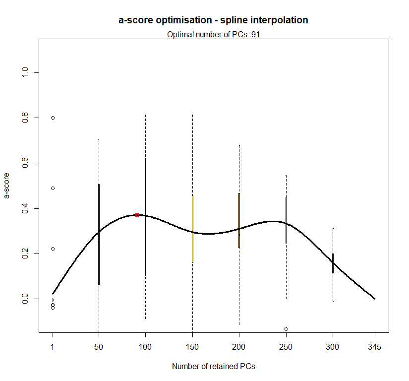
best.n.pca <- temp$best
dapc.obj <- dapc(gen, center=T, scale=F, n.pca=best.n.pca, n.da=2)
dfenv <- extract(fa_stk, gen$other)
dfenv.obj <- dfenv
dfgen.obj <- gen$tab
dfgenenv <- cbind(dfgen.obj, dfenv.obj)
dfgenenv <- na.omit(dfgenenv)
n.alleles <- length(dfgen.obj[1,])
n.env <- length(dfenv.obj[1,])
env.var <- seq(n.alleles + 1, n.alleles + n.env)
dfgen <- dfgenenv[,1:n.alleles]
dfenv <- dfgenenv[,env.var]
##Clusters##
clust <- find.clusters(gen, cent=T, scale=F, n.pca=best.n.pca, method="kmeans", n.iter=1e7, n.clust=3, stat="BIC")
cl <- as.factor(as.vector(clust$grp))
gen$pop <- cl
sq <- as.character(seq(1,3))
popNames(gen) <- sq
dapc3 <- dapc(gen, center=T, scale=F, n.pca=best.n.pca, n.da=2)
scatter(dapc3, col=futr3, ratio.pca=0.3, bg="white",
pch=c(16,15,18,17), cell=0, cstar=0, solid=0.9, cex=1.8, clab=0,
mstree=TRUE, lwd=3, scree.da=FALSE, leg=TRUE, txt.leg=popNames(gen))
par(xpd=TRUE)
points(dapc3$grp.coord[,1], dapc3$grp.coord[,2], pch=21:24, cex=2, lwd=3, col="black", bg=futr3)
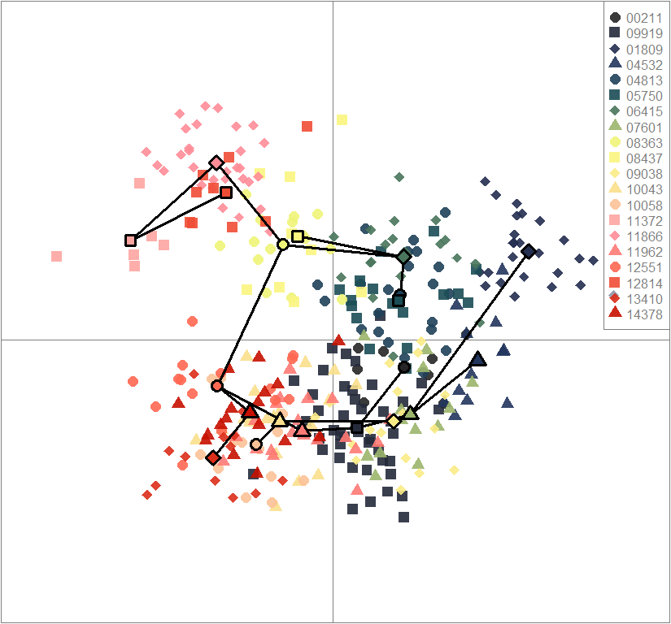
dap3 <- as.data.frame(dapc3$assign)
dfdap3 <- cbind(dap3, dfenv.obj)
dfdap3 <- na.omit(dfdap3)
dfenv3 <- dfdap3[,2:length(dfdap3[1,])]
dfdap3 <- dfdap3[,1]
dfgenenv3 <- cbind(dap3, dfgen.obj, dfenv.obj)
dfgenenv3 <- na.omit(dfgenenv3)
dfdap3 <- dfgenenv3[,1]
dfgenenv3.gen <- dfgenenv3[,2:n.alleles+1]
dfgenenv3.env <- dfgenenv3[,env.var+1]
Accounting for population structure
pcenv3 <- dudi.pca(dfenv3, cent=T, scale=T, scannf=F, nf=2)
bet1 <- bca(pcenv3, dfdap3, scannf=F, nf=2)
pcgen3 <- dudi.pca(dfgen, cent=T, scale=F, scannf=F, nf=2)
bet2 <- bca(pcgen3, dfdap3, scannf=F, nf=2)
coi3 <- coinertia(bet1, bet2, scan=F, nf=2)
plot(coi3, col="gray30")
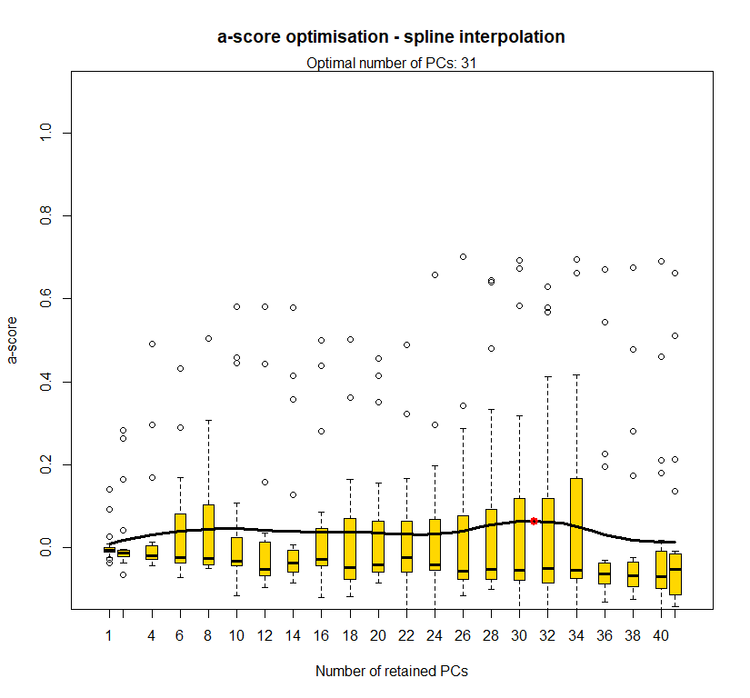
summary(coi3)
## Coinertia analysis
##
## Class: coinertia dudi
## Call: coinertia(dudiX = bet1, dudiY = bet2, scannf = F, nf = 2)
##
## Total inertia: 17.69
##
## Eigenvalues:
## Ax1 Ax2
## 15.708 1.984
##
## Projected inertia (%):
## Ax1 Ax2
## 88.79 11.21
##
## Cumulative projected inertia (%):
## Ax1 Ax1:2
## 88.79 100.00
##
## Eigenvalues decomposition:
## eig covar sdX sdY corr
## 1 15.708356 3.963377 1.3465110 2.948251 0.9983689
## 2 1.983529 1.408378 0.5264643 2.679534 0.9983689
##
## Inertia & coinertia X (bet1):
## inertia max ratio
## 1 1.813092 1.814158 0.9994126
## 12 2.090256 2.090256 1.0000000
##
## Inertia & coinertia Y (bet2):
## inertia max ratio
## 1 8.692183 8.816482 0.9859015
## 12 15.872087 15.872087 1.0000000
##
## RV:
## 0.8537908
High-complexity high-permeability landscape
library(adegenet)
#plot parameters
par(mfrow=c(1,1), fg="gray50", pty='m', bty='o', mar=c(4,4,4,4), cex.main=1.3, cex.axis=1.1, cex.lab=1.2)
futr3 <- c(futr(12)[c(12,7,2)])
#genetic data
gen <- m0.5_hchp_n.s
temp.dapc.obj <- dapc(gen, center=T, scale=F, n.pca=100, n.da=2)
temp <- optim.a.score(temp.dapc.obj, n=15, n.sim=30)
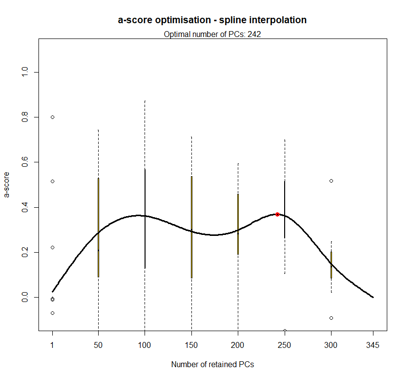
best.n.pca <- temp$best
dapc.obj <- dapc(gen, center=T, scale=F, n.pca=best.n.pca, n.da=2)
dfenv <- extract(fa_stk, gen$other)
dfenv.obj <- dfenv
dfgen.obj <- gen$tab
dfgenenv <- cbind(dfgen.obj, dfenv.obj)
dfgenenv <- na.omit(dfgenenv)
n.alleles <- length(dfgen.obj[1,])
n.env <- length(dfenv.obj[1,])
env.var <- seq(n.alleles + 1, n.alleles + n.env)
dfgen <- dfgenenv[,1:n.alleles]
dfenv <- dfgenenv[,env.var]
##Clusters##
clust <- find.clusters(gen, cent=T, scale=F, n.pca=best.n.pca, method="kmeans", n.iter=1e7, n.clust=3, stat="BIC")
cl <- as.factor(as.vector(clust$grp))
gen$pop <- cl
sq <- as.character(seq(1,3))
popNames(gen) <- sq
dapc3 <- dapc(gen, center=T, scale=F, n.pca=best.n.pca, n.da=2)
scatter(dapc3, col=futr3, ratio.pca=0.3, bg="white",
pch=c(16,15,18,17), cell=0, cstar=0, solid=0.9, cex=1.8, clab=0,
mstree=TRUE, lwd=3, scree.da=FALSE, leg=TRUE, txt.leg=popNames(gen))
par(xpd=TRUE)
points(dapc3$grp.coord[,1], dapc3$grp.coord[,2], pch=21:24, cex=2, lwd=3, col="black", bg=futr3)
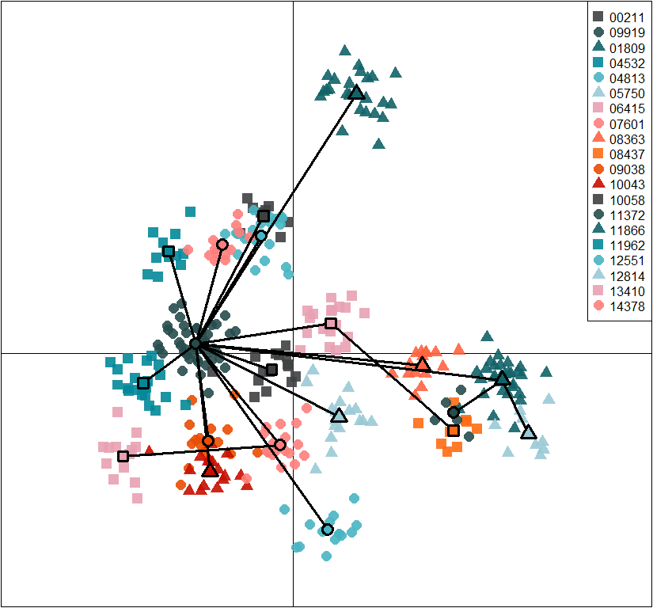
dap3 <- as.data.frame(dapc3$assign)
dfdap3 <- cbind(dap3, dfenv.obj)
dfdap3 <- na.omit(dfdap3)
dfenv3 <- dfdap3[,2:length(dfdap3[1,])]
dfdap3 <- dfdap3[,1]
dfgenenv3 <- cbind(dap3, dfgen.obj, dfenv.obj)
dfgenenv3 <- na.omit(dfgenenv3)
dfdap3 <- dfgenenv3[,1]
dfgenenv3.gen <- dfgenenv3[,2:n.alleles+1]
dfgenenv3.env <- dfgenenv3[,env.var+1]
Accounting for population structure
pcenv3 <- dudi.pca(dfenv3, cent=T, scale=T, scannf=F, nf=2)
bet1 <- bca(pcenv3, dfdap3, scannf=F, nf=2)
pcgen3 <- dudi.pca(dfgen, cent=T, scale=F, scannf=F, nf=2)
bet2 <- bca(pcgen3, dfdap3, scannf=F, nf=2)
coi3 <- coinertia(bet1, bet2, scan=F, nf=2)
plot(coi3, col="gray30")
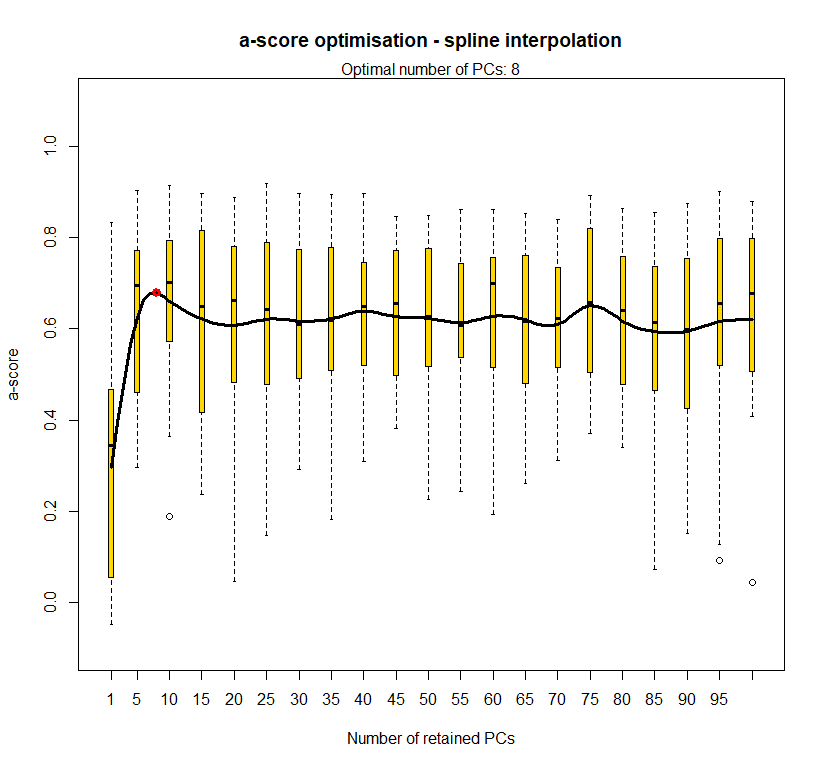
summary(coi3)
## Coinertia analysis
##
## Class: coinertia dudi
## Call: coinertia(dudiX = bet1, dudiY = bet2, scannf = F, nf = 2)
##
## Total inertia: 4.337
##
## Eigenvalues:
## Ax1 Ax2
## 2.490 1.847
##
## Projected inertia (%):
## Ax1 Ax2
## 57.4 42.6
##
## Cumulative projected inertia (%):
## Ax1 Ax1:2
## 57.4 100.0
##
## Eigenvalues decomposition:
## eig covar sdX sdY corr
## 1 2.489521 1.577822 0.5476020 2.926720 0.9844908
## 2 1.847450 1.359209 0.4952117 2.787942 0.9844908
##
## Inertia & coinertia X (bet1):
## inertia max ratio
## 1 0.2998679 0.3274106 0.9158774
## 12 0.5451026 0.5451026 1.0000000
##
## Inertia & coinertia Y (bet2):
## inertia max ratio
## 1 8.565692 9.654541 0.887219
## 12 16.338314 16.338314 1.000000
##
## RV:
## 0.9393858